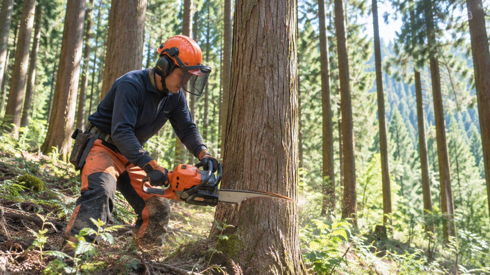
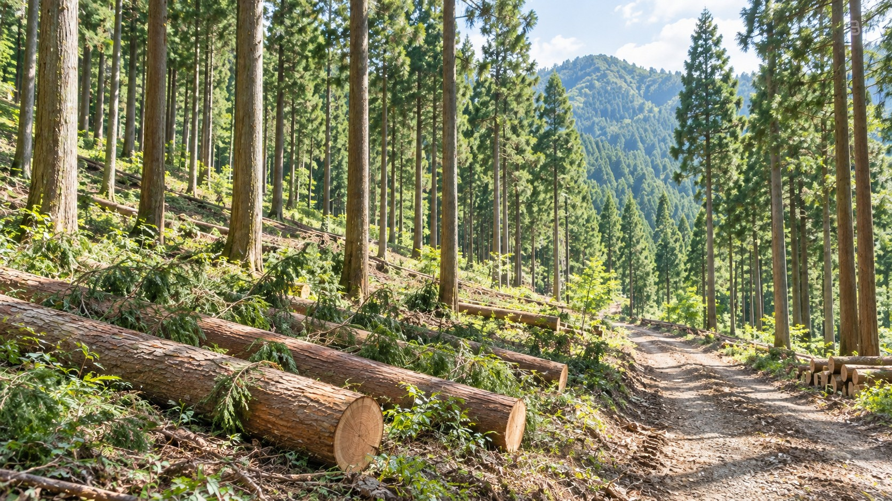
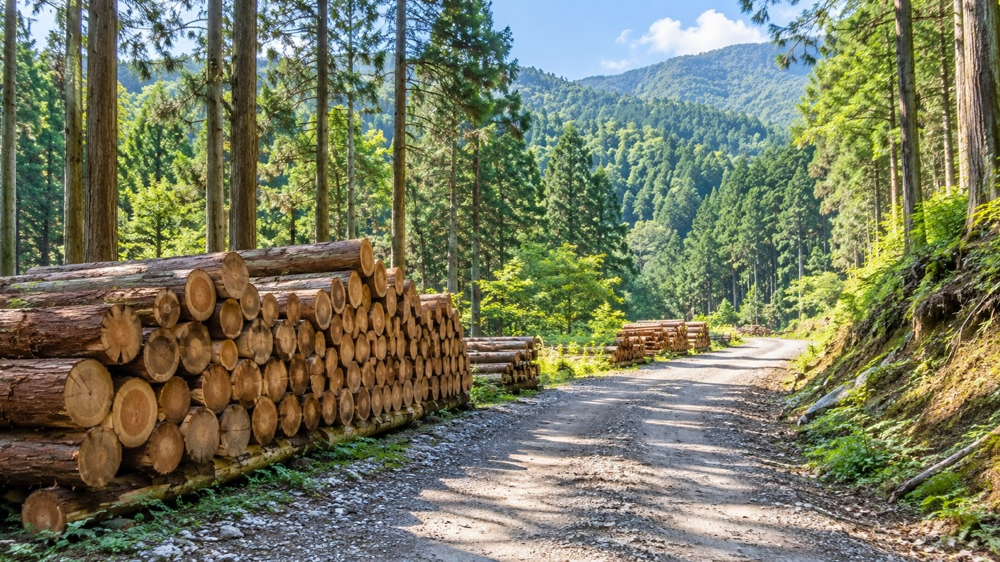

02 FOREST MANAGEMENT
OUR BUSINESS / SERVICE 02
森林整備
森を整え、
未来へつなぐ。
森林を健全な状態に整え、地域の安全と森林資源の有効活用につなげます。
ABOUT SERVICE
森林整備について
森林整備は、森林の健全な成長を促し、土砂災害の防止や景観の維持、生態系の保全にもつながる重要な取り組みです。
株式会社Clearthでは、地域の森林資源を未来へつなぐため、一つひとつの現場に合わせた最適な森林整備を行っています。
間伐・皆伐、支障木・危険木の確認まで一体でご相談いただけます。

WHY CLEARTH
Clearthの森林整備
選ばれる理由
- 01
現地調査から施工まで丁寧に対応
山林の状態や周辺環境を確認し、必要な整備内容を整理します。
- 02
現場に合わせた森林整備
間伐・皆伐や荒廃山林の整備など、現場に合わせて対応します。
- 03
重機を活用した安全で効率的な施工
倒木リスクや支障木・危険木も確認し、必要な整備につなげます。
- 04
森林整備から資源活用まで一貫対応
森林資源を無駄にしない循環型事業として、整備後の木材も可能な限り活用します。

FOREST TO RESOURCE
森を整え、資源へ。
森林整備で発生した木材は可能な限り資源として有効活用し、木質チップの製造やバイオマス燃料として再利用することで、循環型社会の実現に貢献しています。
対応内容
- 山林の現地調査
- 間伐・皆伐
- 荒廃山林の整備
- 倒木リスクの確認
- 支障木・危険木の確認
FLOW
ご相談から森林整備まで
相談から完了まで
- 01ご相談
- 02現地調査
- 03森林整備
- 04搬出・木材の有効活用
- 05木質チップ製造・燃料供給
FOR YOU / WHO IT HELPS
こんなことでお困りではありませんか
山林所有者、森林管理でお困りの方、法人企業、自治体
- 山林の手入れができていない
- 間伐・皆伐について相談したい
- 倒木のリスクが気になる
- 支障木・危険木を確認してほしい
- 整備後の木材も有効活用したい
CONTACT
森林整備について、まずはご相談ください。
山林の状況確認、間伐・皆伐、支障木・危険木の確認、森林整備後の木材活用まで、現地の状況に合わせて最適なご提案をいたします。まずはお気軽にご相談ください。
対応エリア
広島県全域を中心に対応しております。近隣県についても対応可能な場合がありますので、お気軽にご相談ください。
現地確認・お見積りは無料です。現場状況やご相談内容を確認したうえで、最適な方法をご提案いたします。